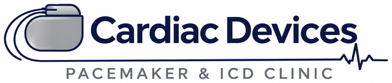

CIED MRI Check
1
Paste device information
Read text
Example
Use AI
2
Components
+ Lead
+ Generator
Clear
3
Patient & scan
Device type
Auto-detect
Pacemaker
CRT-P
Leadless
ICD / CRT-D
S-ICD
Loop recorder
PA monitor
Pacemaker dependent
Unknown
No
Yes
Scanner
1.5 T
3 T
> 3 T
Scan region
Non-chest
Cardiac
Other chest
Generator site
Left pectoral
Right pectoral
Other
Latest implant / revision
Findings (X-ray / notes)
Fractured lead
Extender / adaptor
Abandoned lead
Epicardial lead
ERI / abnormal values
Is my device compatible?
Copy summary